Cabins at Woodland Beach Resort on Bay Lake near Brainerd MN.
Experience a Bay Lake tradition while vacationing at Woodland Beach Resort. Many features from the earlier days have been blended with today's conveniences. We provide the following ammenities: bedding, dishes, basic kitchen cookware, AIR CONDITIONING, cable TV, wireless internet, picnic table, grill, POOL & HUGE HOT TUB (new in summer of 2015), swim beach with 20' RAVE with slide and Whoosh, canoes, paddle boats, kayaks, paddle boards, playground, volleyball, tetherball, ping pong, horseshoe, a game room, fish cleaning facilities, and laundry room. We also have a small general store that serves pizza, and lots of yummy ice cream treats.
Items you will want to bring include all towels; any bath towels, beach towels, dish towels, all soaps; hand soap, bath soap, dish soap, if you cabin has dishwasher, dishwasher soap, charcoal, lighter fluid, sun screen.
Woodland Beach Resort has been a favorite Bay Lake family resort for over 81 years.
| 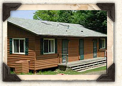 Click to View Cabin |
Cabin 01Bedrooms: 2 | Bathrooms: 1 | Sleeps: 4 Very nice lakefront deluxe two bedroom duplex with fantastic panoramic views of Bay Lake. All knotty pine interior with air conditioning, vaulted ceiling, skylight, log furniture, invite you to relax and enjoy a peaceful day at Woodland Beach Resort. Wraparound deck comes equipped with picnic table and grill. Master bedroom has queen bed and second bedroom has two twin beds. You may rent Cabin 2, unlock the adjoining privacy door and enjoy both sides of this cabin to create a 4 bedroom, 2 bath unit. Many new updates for the 2012 season!!! |
| 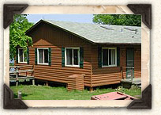 Click to View Cabin |
Cabin 02Bedrooms: 2 | Bathrooms: 1 | Sleeps: 4 Very nice lakefront deluxe two bedroom duplex with fantastic panoramic views of Bay Lake. All knotty pine interior with air conditioning, vaulted ceiling, skylight, log furniture. Connecting door between Cabin 1 and Cabin 2 allows you to rent both cabins and enjoy a 4 bedroom lakefront cabin. Relax and enjoy a peaceful day at Woodland Beach Resort. Wraparound deck comes equipped with picnic table and grill. Master bedroom has queen bed and second bedroom has two twin beds and sofa sleeper in both the living rooms. Many new updates for the 2012 season!!! |
| 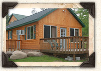 Click to View Cabin |
Cabin 03Bedrooms: 2 | Bathrooms: 2 | Sleeps: 5 New for 2009. Wonderful memories await when you spend time in Cabin 3. The knotty pine interior, large windows , spacious deck and an 'Up North' feeling are just a few of the ammenities you will enjoy in this 2 bedroom, 2 bath cabin. Master bedroom has a queen bed and second bedroom has double bed and twin bed. There is a sofa sleeper in the living room. Complete with air conditioning, Cabin 3 is the perfect place to spend your vacation at Woodland Beach Resort. |
| 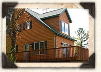 Click to View Cabin |
Cabin 04Bedrooms: 4 | Bathrooms: 2 | Sleeps: 8 Best views of Bay Lake and Church Island in this cozy lakefront four bedroom, two bath knotty pine cabin complete with air conditioning. Whether you relax on your wraparound deck or look out of the large windows, you can enjoy nature at its finest. Two bedrooms have queen beds and two bedrooms have two twin beds in each. There is a sofa sleeper in the living room of this beautiful cabin. All new flooring, TV, sofa, chair for 2014!!! |
| 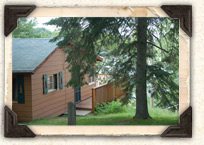 Click to View Cabin |
Cabin 05Bedrooms: 3 | Bathrooms: 1 | Sleeps: 6 Comfortable three bedroom lakefront cabin lets you enjoy the lovely views of Bay Lake from inside your knotty pine cabin or from the picnic table on your wraparound deck. Newly remodeled kitchen and living room with air conditioning, fireplace will help create the perfect vacation getaway for you and your family. Two bedrooms have double beds, third bedroom has two twin beds. Many new updates for the 2013 season!!! |
| 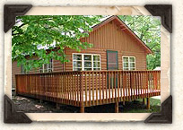 Click to View Cabin |
Cabin 06Bedrooms: 2 | Bathrooms: 1 | Sleeps: 4 Nostalgic knotty pine two bedroom lake view cabin has a deck for you to enjoy another great day at Woodland Beach Resort on beautiful Bay Lake. This cabin has two bedrooms, one with a double bed and the other with 2 twin beds, and a sofa sleeper in the living room(sleeps 5). With air conditioning, wraparound deck is the perfect place to relax and enjoy all that the Woodland Beach Resort has to offer. New bath for 2017. |
| 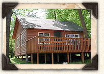 Click to View Cabin |
Cabin 07Bedrooms: 2 | Bathrooms: 1 | Sleeps: 4 There is a nod to yesteryear with many original features from the 1940's in these quaint two bedroom cabin. Knotty pine interior, open floor plan, with air conditioning, attached decks with picnic table s and grills will help you enjoy the "Up North" beauty of Bay Lake. Master bedroom has a double bed. Cabin 7 has two twin beds in second bedroom, and sofa sleepers in the living rooms. New Kitchen and bath for 2017 season. |
| 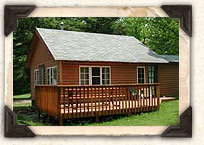 Click to View Cabin |
Cabin 08Bedrooms: 2 | Bathrooms: 1 | Sleeps: 4 There is a nod to yesteryear with many original features from the 1940's in these quaint two bedroom cabins. Knotty pine interior, open floor plan, air conditioning, attached decks with picnic tables and grills will create vacation memories for you. Master bedroom has a double bed. Cabin 8 has two twin beds in second bedroom and sofa sleepers in the living rooms. New bath for 2016. |
 Click to View Cabin |
Cabin 09Bedrooms: 2 | Bathrooms: 1 | Sleeps: 4 Luxurious 2 bedroom 1 bath cabin which walks out onto a beautifully landscaped yard. Enjoy the of beauty of the Great North in these easy access units. Rent both sides, unlock the adjoining privacy door and you are ready to enjoy spending time with your family and friends next door in Cabin 11. Master bedroom has a queen bed and other bedroom has 2 twin beds. With air conditioning, stone gas fire place, tile floor, dishwasher it will be a hit with the family. |
 Click to View Cabin |
Cabin 10Bedrooms: 4 | Bathrooms: 2 | Sleeps: 8 Well appointed 4 bedroom 2 bath cabin. The lofted great room, the 'dreaming nook' and the unparalleled views allow our guests to create many new family memories. Rent both sides, unlock the adjoining privacy door and you are ready to enjoy spending time with your friends and family next door in Cabin 12. Two bedrooms have queen beds and other two bedrooms have two twin beds in each. With air conditioning, stone gas fire place, dishwashwe and deck it will be a hit with the family. |
 Click to View Cabin |
Cabin 11Bedrooms: 2 | Bathrooms: 1 | Sleeps: 4 Beautiful "Up North" 2 bedroom 1 bath cabin which walks out onto a beautifully landscaped grassy area. Enjoy all of the beauty of the Great North in these easy access units. Rent both sides, unlock the adjoining privacy door and you are ready to enjoy spending time with your family and friends next door in Cabin 9. Master bedroom has a queen bed and other bedroom has two twin beds. With air conditioning, stone gas fire place, tile kitchen floor and dishwasher it will be a hit with the family. |
| 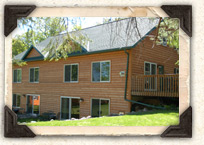 Click to View Cabin |
Cabin 12Bedrooms: 4 | Bathrooms: 2 | Sleeps: 8 Comfortable and roomy "North Woods" style 4 bedroom 2 bath cabin. The lofted great room, the 'dreaming nook' and the unparalleled views allow our guests to create many new vacation memories. Rent both sides, unlock the adjoining privacy door and you are ready to enjoy spending time with your friends and family next doorin Cabin 10. Two bedrooms feature a queen bed and the other two bedrooms have two twin beds in each. With air conditioning, stone gas fire place, dishwasher and deck it will be a hit with the family. |
| 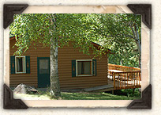 Click to View Cabin |
Cabin 14Bedrooms: 4 | Bathrooms: 1 | Sleeps: 8 This cabin is very popular for larger groups or multi family gatherings. Features include open floor plan with air conditioning, newly remodeled kitchen, bath and living room. The living area is perfect for sharing meals, playing games or just visiting with friends. The large attached wraparound deck comes equipped with a picnic table and grill so you can enjoy yourselves outdoors as much as indoors. Two bedrooms have double beds and two bedrooms have two twin beds in each and a sofa sleeper in the living room. Many new updates for the 2013 season!!! |
| 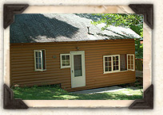 Click to View Cabin |
Cabin 15Bedrooms: 3 | Bathrooms: 1 | Sleeps: 6 Charming three bedroom lake front knotty pine cabin has a beautiful view of Bay Lake from the living/dining room or from the wraparound deck. Perfect for the group wanting a little more privacy, one bedroom is on the main level while the other two and the bathroom is up one step to give you the feeling of a multi level cabin. This cabin has two bedrooms with double beds and one bedroom with two twin beds. New bath and kitchen for 2018 season!!! |
| 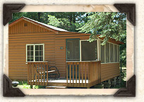 Click to View Cabin |
Cabin 16Bedrooms: 1 | Bathrooms: 1 | Sleeps: 2 Cheerful and intimate one bedroom knotty pine has some wonderful original features from earlier days. Air conditioning and attached screen porch with sliding doors allows you to enjoy the outdoors in comfort, no matter what the weather. This cabin contains one queen size bed and a sofa sleeper in the living room. Many new updates for the 2012 season and new bath for 2016 season!!! |
| 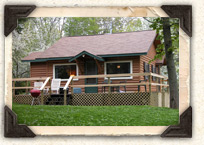 Click to View Cabin |
Cabin 17Bedrooms: 1 | Bathrooms: 1 | Sleeps: 2 This quiet "Up North" one bedroom cabin has knotty pine interior, air conditioning, new bathroom, queen bed and a sofa sleeper. The huge deck is the perfect place to enjoy your meals outdoors, or to simply sit and watch the world go by. Cabin #17 allows you to enjoy a sweeping view of Woodland Beach Resort while being surrounded on three sides by trees. This cabin has all new flooring, new kitchen, new mattress for 2014!!! |
| 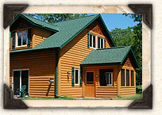 Click to View Cabin |
Cabin 18Bedrooms: 4 | Bathrooms: 2 | Sleeps: 8 North Woods beauty and comfort await you in this newer Pool Front 4 bedroom townhome which is among Bay Lakes's finest accomodations. Nestled at the edge of wooded acerage. This knotty pine cabin has stone gas fireplace, screen porch, patio, 2 full baths, dishwasher, air conditioning, ceiling fans in every room and much more. A beautiful place to enjoy your vacation. There are two queen beds and 4 twin beds in Cabin 18. |
| 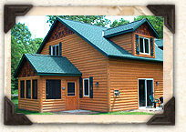 Click to View Cabin |
Cabin 19Bedrooms: 3 + | Bathrooms: 2 | Sleeps: 8 Enjoy Bay Lake while renting this newer Pool Front 3 bedroom townhome which is among Bay Lakes's finest accomodations. Nestled at the edge of wooded acerage. This knotty pine cabins have the following ammenities: stone gas fireplace, screen porch, patio, 2 full baths, dishwasher, air conditioning, ceiling fans in every room and much more. A beautiful place to enjoy your vacation. There are two queen beds on the main level and four twin beds in the lofted upper area. |
| 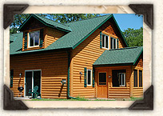 Click to View Cabin |
Cabin 20Bedrooms: 4 | Bathrooms: 2 | Sleeps: 8 You will have a have A Bay Lake vacation to remember when you rent this beautiful newer Pool Front 4 bedroom townhome. Cabin 20 is among Bay Lakes's finest accomodations. Nestled at the edge of wooded acerage. this knotty pine cabin has a stone gas fireplace, screen porch, patio, 2 full baths, dishwasher, air conditioning, ceiling fans in every room and much more. A beautiful place to enjoy your vacation. Cabin 20 has two queen beds and 4 twin beds. |
| 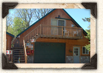 Click to View Cabin |
Cabin 21Bedrooms: 2 | Bathrooms: 1 | Sleeps: 4 The Coach House Cabin is a cozy and inviting 2 bedroom air conditioned cabin with 2 queen beds. Nestled among the pines and located a few short steps above the garage, Cabin 21 has knotty pine interior and provides a truly unique 'Up North' feeling. Enjoy the view from the deck overlooking the resort. |
Click to View Cabin |
The Reunion CenterBedrooms: 12 | Bathrooms: 6 | Sleeps: 24
Enjoy Up North luxury in the heart of a classic Minnesota Resort. Completed in Spring of 2005, the Reunion Center features log accents, fireplaces, dishwashers, air conditioning, ceiling fans in every room and spacious decks or patios. |